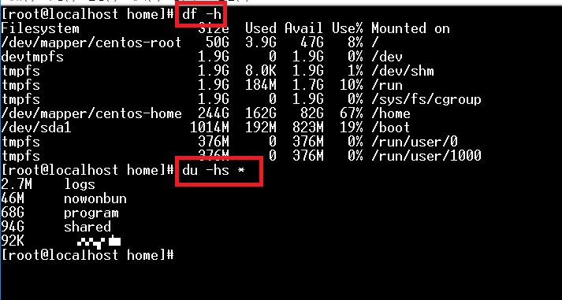
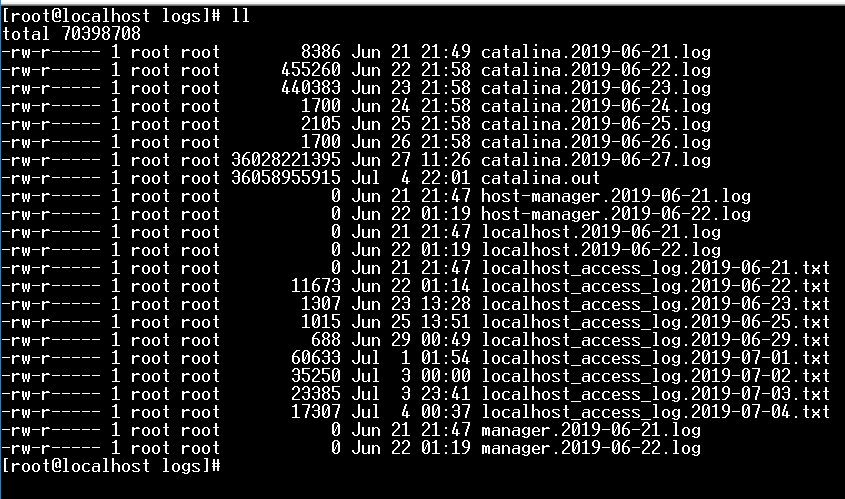
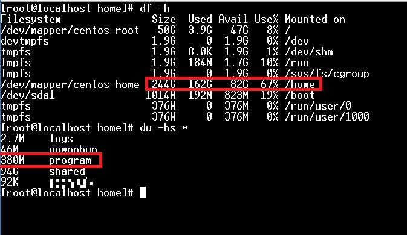
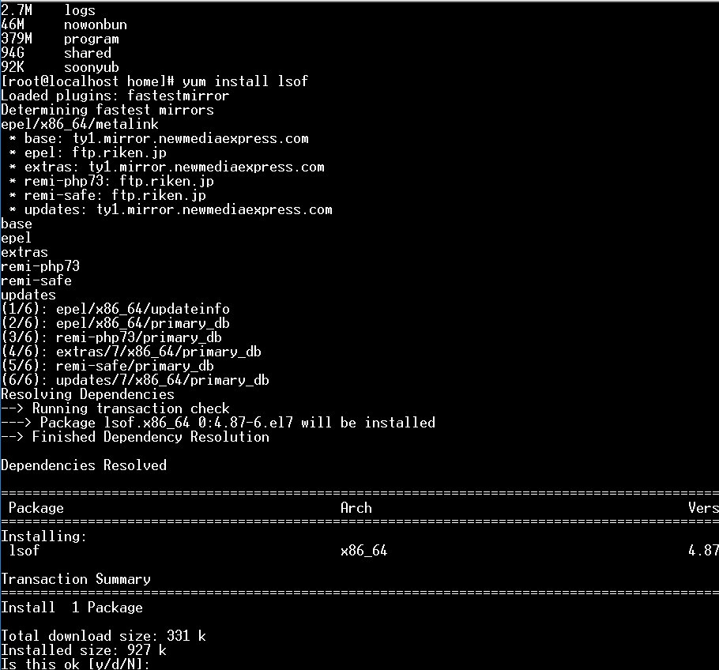
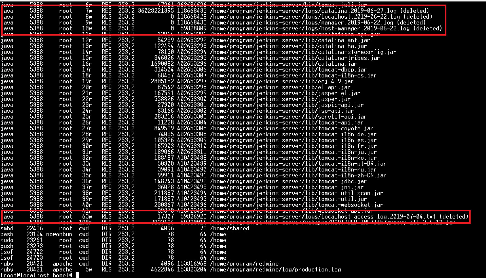
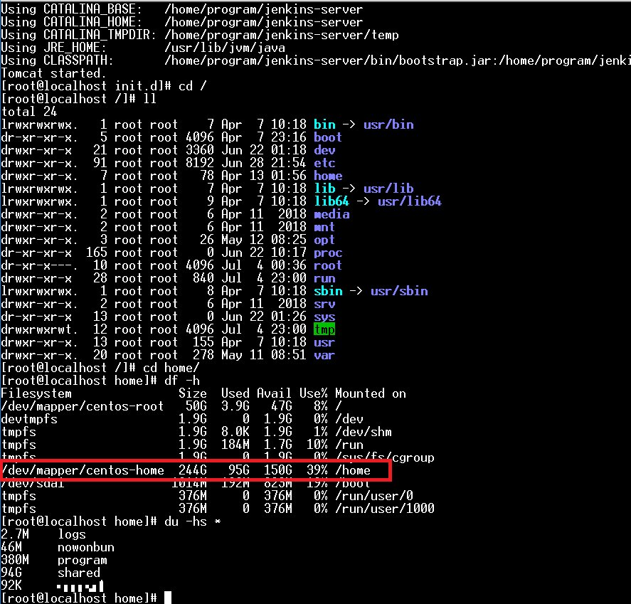

[Linux] ディスク使用率チェック(df, du, lsof)とdfバグを解決方法
こんにちは。明月です。
CentOSを運用する時にハードディスクの量を確認しべきな時があります。それを「df」,「du」のコマンドで確認ができます。
でも、「df」と「du」の場合はチェックする方法が違い「df」の場合でバグが発生する時があります。
最近、CentOS運用中でサーバディスクがいっぱいになった時があります。普通のローカルのウィンドウPCだとハードディスクの量が足りなかったらアラムメッセージが出るからすぐ気づきますが、CentOSの場合は別にメッセージもないし、普通はリモートでターミナルで運用するからよく知ることが大変ですね。
私の場合はファイルをアップロードする時に急にアップロードができなくなって、何かとみたらハードディスクがいっぱいになっていました。
サーバでそれぞれのアプリケーションを運用するからログがたくさん貯まっていましたよね。よく確認しなければならないです。
その時に確認する方法が「df -h」コマンドでした。rootで「du -hs *」で確認する方法もあります。

すごく簡単です。そして実際に「df -h」と「du -hs *」のコマンドを実行すれば「df -h」の方が処理速度が早いです。
でもこの「df -h」はバグがあります。「df」のコマンドはそれぞれのアプリケーションでよく使うコマンドなので困りますね。

上のイメージで自分のファイルリストを見れば、トムキャットのログがすごく貯まっていますね。約36GBファイルが２つありますね。ログで。。。
実は私がトムキャットの設定が間違っているから発生したことですが、一応、そのことは対応してログを消さなければならないですね。それでそのファイルを消しました。

それでもう一度「df -h」と「du -hs *」を確認すると「du -hs *」で見るのは確実に60GBが減らしました。でも「df -h」はそのままですね。
私が確かにログファイルを消したので「du -hs *」の結果が合ってると思います。
そうすると「df -h」が問題ですが。
様々を調べると多分「IOライブラリ」と関係がありそうです。コネクションによって問題が発生したと意味ですが。。コネクションによって問題になる気がします。
以前にも私の場合は同じエラーがなった時があります。その時もハードディスクの使用率が「100%」まで使ったことがあります。やはりその時もログを全て消しましたが、ディスクがいっぱいでエラーに発生して再起動した記憶があります。
そのことが多分「df -h」と関係がありそうですね。
私の結論は「du」のコマンドは物理的データを確認するから正確値で出ますが、IOと関係あるライブラリを「df」コマンドと関係があり、実際にディスクが空いても「df -h」上でデータがいっぱいになっているともうファイル書き込むのが出来ないという意味です。
それで「lsof」コマンドでIOクリアができるので、インストールしましょう。

そして「lsof」コマンドを実行したら下記とおりの結果が出ました。

確実に「5388」のPSを持っているアプリが「deleted」ファイルのコネクションを捕まっていることが見えます。プロセスキルするほうが簡単ですが、ただプロセスキルよりなんのプログラムということを確認して再起動がいいでしょう。
「ps」のコマンドで確認すると知れるが、上のイメージだけでもトムキャットだってすぐ予想ができますね。
それでトムキャットを再起動しましょう。

再起動をすれば、一応アプリが落ちる時にリソースを全てOSに返却するので、コネクションも解除されますね。その後「df -h」のコマンドで確認するとハードディスクが戻りました。
それで別にプロセスキルや再起動しなくてもリソースを使えるようになりました。
多分、ディスクがあるのにIOエラーが発生する方はこの方法も考慮するほうが良いと思いますね。
- [Ubuntu] Chromeをインストールする方法2019/11/06 19:48:19
- [CentOS] YUMについて、YUMが出来ない場合処理方法2019/11/05 07:17:58
- [CentOS] MariaDB(Mysql)をインストール2019/11/04 18:35:10
- [CentOS] FTPインストールする方法(vsftpd)2019/11/01 07:29:57
- [CentOS] SAMBAインストール方法2019/10/30 07:38:57
- [CentOS] PHPインストールする方法2019/10/29 20:09:03
- [CentOS] ApacheとTomcatの連携2019/10/29 07:28:33
- [CentOS] Tomcat インストール方法2019/10/28 22:38:56
- [CentOS] Java インストール2019/10/28 00:22:32
- [CentOS] apacheをインストールする方法2019/10/25 21:43:27
- [Linux] ディスク使用率チェック(df, du, lsof)とdfバグを解決方法2019/10/24 21:46:31
- [CentOS] Wheel設定2019/10/23 23:53:40
- [CentOS] システムの文字セット変更2019/10/21 16:58:39
- [CentOS] Vim編集ツールをインストールする方法2019/10/21 00:24:44
- [Linux] Putty使用方法2019/10/20 00:42:54
- [C#] 46. データベース(MSSQL)に接続する方法2021/10/07 18:39:58
- [C#] 45. ネットワークソケット通信(Socket)を使い方2021/10/06 19:06:25
- [C#] 44. ファイル(FileInfo)とディレクトリ(DirectoryInfo)を扱い2021/10/05 19:29:34
- [C#] 43. ストリーム(Stream)とバイナリ(byte[])、エンコード(Encoding)、そしてusingを使い方とIDisposableインターフェース2021/10/04 18:33:04
- [C#] 42. ファイルを扱い(IO)とファイルメタデータ(FileInfo)を使い方2021/10/01 20:10:21
- [C#] 41. Taskクラスとasync、awaitを使い方2021/10/01 18:59:14
- [Javascript ] WebのFull calendar(スケジュールカレンダー)の使い方法2021/07/15 21:35:36
- [Java] 56. Web serviceのサーブレット(Servlet)で初期化作業(properties設定)2021/07/02 17:10:36
- [Java] 55. Spring frameworkに文字化けを解決する方法(Encoding設定)2021/06/30 16:37:16
- [Java] 54. Spring frameworkでWeb filterを使う方法2021/06/29 18:25:12
- [Java] 53. ウェブサービス(Web service)でエラーページを処理する方法2021/06/25 13:35:54
- [Design pattern] 1-3. ファクトリメソッドパターン(Factory method pattern)2021/06/23 19:45:37
- [Java] WebSocketでチャット履歴をローディングする方法2021/06/15 18:34:45
- [Java] WebSocketを利用してユーザ(サイト運用者)が他のユーザとチャットする方法2021/06/15 17:20:08
- [Design pattern] 1-2. ビルダーパターン(Builder pattern)2021/06/11 19:06:28